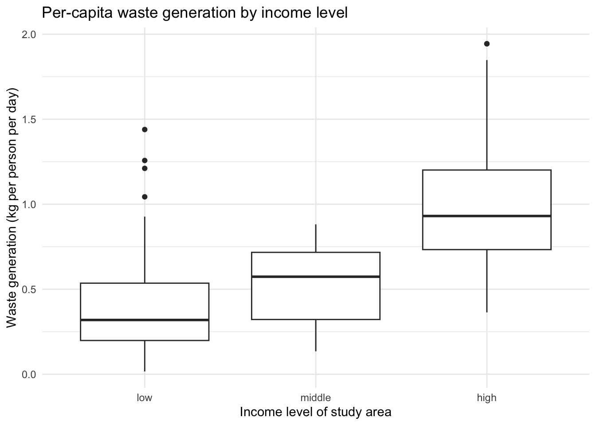

The solidwastekampala package provides the household-level data behind the manuscript “Quantity and Composition of Domestic Solid Waste in Kampala City as Influenced by Socio-Economic Factors” (Katukiza et al., Makerere University). Over a seven-day measurement campaign, the study team weighed the domestic solid waste generated by 103 households in three Kampala parishes selected to represent different income levels: Bwaise I (low), Bukoto I (middle), and Ggaba (high). Each record combines the measured mass of ten waste categories with derived per-household metrics and the socio-economic characteristics of the household and its dwelling. The package contains one analysis-ready dataset together with a full variable dictionary.
Installation
You can install the development version of solidwastekampala from GitHub with:
# install.packages("devtools")
devtools::install_github("openwashdata/solidwastekampala")
## Run the following code in console if you don't have the packages
## install.packages(c("dplyr", "knitr", "readr", "stringr", "gt", "kableExtra"))
library(dplyr)
library(knitr)
library(readr)
library(stringr)
library(gt)
library(kableExtra)Alternatively, you can download the individual datasets as a CSV or XLSX file from the table below.
- Click Download CSV. A window opens that displays the CSV in your browser.
- Right-click anywhere inside the window and select “Save Page As…”.
- Save the file in a folder of your choice.
| dataset | CSV | XLSX |
|---|---|---|
| solidwastekampala | Download CSV | Download XLSX |
Data
The package provides access to one dataset with the waste measurements and socio-economic characteristics of the 103 analyzed households.
solidwastekampala
The dataset solidwastekampala contains the mass of ten waste categories collected from each household over a seven-day period, the derived per-household metrics (total, per-day, per-capita, volume, and density), and the socio-economic characteristics of the household and its dwelling. It has 103 observations and 37 variables.
solidwastekampala |>
head(3) |>
gt::gt() |>
gt::as_raw_html()| id | household_id | division | parish | zone | income_level | occupants | age_head | gender_head | education_head | profession_head | monthly_income_ugx | respondent | period_of_stay | occupancy | housing_quality | roof_material | wall_material | floor_material | water_access | sanitation_facility | road_condition | waste_food_kg | waste_garden_kg | waste_wood_kg | waste_textiles_kg | waste_paper_kg | waste_polythene_kg | waste_plastics_kg | waste_glass_kg | waste_metals_kg | waste_other_kg | waste_total_kg | waste_per_day_kg | waste_per_capita_kg | volume_l | density_kg_l |
|---|---|---|---|---|---|---|---|---|---|---|---|---|---|---|---|---|---|---|---|---|---|---|---|---|---|---|---|---|---|---|---|---|---|---|---|---|
For an overview of the variable names, see the following table.
| variable_name | variable_type | description |
|---|---|---|
| id | integer | Package-level unique household identifier (1-103), following the row numbering of the All_data sheet in the raw workbook (Bwaise I, then Bukoto I, then Ggaba). |
| household_id | character | Household label as recorded on the area sheet (for example Household_7); values repeat across parishes and contain gaps, so id is the unique key. |
| division | character | Kampala City division the household is located in (Kawempe, Makindye, or Nakawa). |
| parish | character | Study parish the household is located in (Bwaise I = low income, Bukoto I = middle income, Ggaba = high income area). |
| zone | character | Administrative zone within the parish where the household is located. |
| income_level | c(“ordered”, “factor”) | Income level of the household’s study area as classified in the study design; ordered factor with levels low < middle < high. |
| occupants | integer | Number of people living in the household during the 7-day waste collection period. |
| age_head | c(“ordered”, “factor”) | Age of the household head in years; ordered factor with levels 18-35 < 36-60 < >60. |
| gender_head | character | Gender of the household head (Female or Male). |
| education_head | c(“ordered”, “factor”) | Highest education level of the household head; ordered factor with levels Illiterate < Primary < Secondary < Tertiary. |
| profession_head | character | Profession of the household head (Business, Government employee, Housewife, Private employee, or Retired). |
| monthly_income_ugx | c(“ordered”, “factor”) | Monthly household income band in Uganda shillings (UGX); ordered factor with levels <500,000 < 500,000-1,000,000 < 1,000,000-3,000,000 < >3,000,000. |
| respondent | character | Household member who answered the questionnaire (Household head, Spouse, Son/daughter, or Niece/nephew). |
| period_of_stay | c(“ordered”, “factor”) | How long the household has lived at the premises; ordered factor with levels <1 year < 1-3 years < 3-5 years < >5 years. |
| occupancy | character | Occupancy status of the premises (Occupied by owner or Rented). |
| housing_quality | character | Type of dwelling as a proxy for housing quality (Bungalow, Story building, or Temporary). |
| roof_material | character | Main roof material of the dwelling (Cemented, Iron sheets, Iron sheets/tiles, or Tiles); Bwaise I recorded only the combined Iron sheets/tiles category. |
| wall_material | character | Main wall material of the dwelling (Bricks, Concrete blocks, or Mud/poles). |
| floor_material | character | Main floor material of the dwelling (Cemented, Mud, or Tiles). |
| water_access | character | Main drinking water access of the household (House connection, Stand pipe, or Yard tap). |
| sanitation_facility | character | Whether the household’s sanitation facility is shared with other households (Shared facilities or Not shared facilities). |
| road_condition | character | Condition of the access road to the household (Paved or Unpaved). |
| waste_food_kg | numeric | Mass of food waste generated by the household over the 7-day collection period, in kilograms (ASTM waste category). |
| waste_garden_kg | numeric | Mass of garden waste generated by the household over the 7-day collection period, in kilograms (ASTM waste category). |
| waste_wood_kg | numeric | Mass of wood waste generated by the household over the 7-day collection period, in kilograms (ASTM waste category). |
| waste_textiles_kg | numeric | Mass of textile waste generated by the household over the 7-day collection period, in kilograms (ASTM waste category). |
| waste_paper_kg | numeric | Mass of paper waste generated by the household over the 7-day collection period, in kilograms (ASTM waste category). |
| waste_polythene_kg | numeric | Mass of polythene waste generated by the household over the 7-day collection period, in kilograms (ASTM waste category). |
| waste_plastics_kg | numeric | Mass of plastic waste generated by the household over the 7-day collection period, in kilograms (ASTM waste category). |
| waste_glass_kg | numeric | Mass of glass waste generated by the household over the 7-day collection period, in kilograms (ASTM waste category). |
| waste_metals_kg | numeric | Mass of metal waste generated by the household over the 7-day collection period, in kilograms (ASTM waste category); for Ggaba Household_7 the value 2.674 was stored as text in the raw sheet and is excluded from that household’s recorded waste_total_kg. |
| waste_other_kg | numeric | Mass of waste not covered by the other nine categories, generated by the household over the 7-day collection period, in kilograms (ASTM waste category). |
| waste_total_kg | numeric | Total mass of waste generated by the household over the 7-day collection period, in kilograms, as recorded in the raw sheet (SUM of the ten category columns). |
| waste_per_day_kg | numeric | Mean daily mass of waste generated by the household, in kilograms per day (waste_total_kg divided by 7). |
| waste_per_capita_kg | numeric | Mean daily mass of waste generated per household member, in kilograms per person per day (waste_per_day_kg divided by occupants). |
| volume_l | numeric | Volume of the waste generated by the household over the 7-day collection period, in litres. |
| density_kg_l | numeric | Bulk density of the generated waste, in kilograms per litre; multiply by 1000 for kg/m3 as reported in the manuscript. |
Example
The example reproduces the headline figures of the manuscript: mean per-capita waste generation and mean waste density by income level.
library(solidwastekampala)
library(dplyr)
library(ggplot2)
solidwastekampala |>
group_by(income_level) |>
summarise(
households = n(),
waste_kg_capita_day = round(mean(waste_per_capita_kg), 2),
density_kg_m3 = round(mean(density_kg_l) * 1000)
)
#> # A tibble: 3 × 4
#> income_level households waste_kg_capita_day density_kg_m3
#> <ord> <int> <dbl> <dbl>
#> 1 low 39 0.43 368
#> 2 middle 32 0.53 571
#> 3 high 32 0.98 325The figure boxplot-per-capita below shows the distribution behind those means: per-capita waste generation rises with the income level of the study area, from 0.43 kg per person per day in Bwaise I (low) to 0.98 kg in Ggaba (high), where the spread across households is also widest.
ggplot(solidwastekampala,
aes(x = income_level, y = waste_per_capita_kg)) +
geom_boxplot() +
labs(
x = "Income level of study area",
y = "Waste generation (kg per person per day)",
title = "Per-capita waste generation by income level"
) +
theme_minimal()
License
Data are available as CC-BY.
Citation
Please cite this package using:
citation("solidwastekampala")
#> To cite package 'solidwastekampala' in publications use:
#>
#> Katukiza A, Niwagaba C, Feni I, Namagembe S, Semiyaga S, Batte A,
#> Schöbitz L, Manga M (2026). "solidwastekampala: Quantity and
#> Composition of Domestic Solid Waste in Kampala City."
#> <https://openwashdata.github.io/solidwastekampala/>.
#>
#> A BibTeX entry for LaTeX users is
#>
#> @Misc{katukiza_etall:2026,
#> title = {solidwastekampala: Quantity and Composition of Domestic Solid Waste in Kampala City},
#> author = {Alex Y. Katukiza and Charles B. Niwagaba and Ivan Feni and Shaluwa Namagembe and Swaib Semiyaga and Abubakar Batte and Lars Schöbitz and Musa Manga},
#> year = {2026},
#> url = {https://openwashdata.github.io/solidwastekampala/},
#> abstract = {Domestic solid waste generation and composition data for 103 households in Kampala City, Uganda, collected over a seven-day measurement campaign in three parishes representing different income levels (Bwaise I, low income; Bukoto I, middle income; Ggaba, high income). Includes ten measured waste-category masses, derived per-household metrics, and household socio-economic characteristics. The data accompany the manuscript "Quantity and Composition of Domestic Solid Waste in Kampala City as Influenced by Socio-Economic Factors" (Katukiza et al., Makerere University).},
#> version = {1.0.0},
#> }